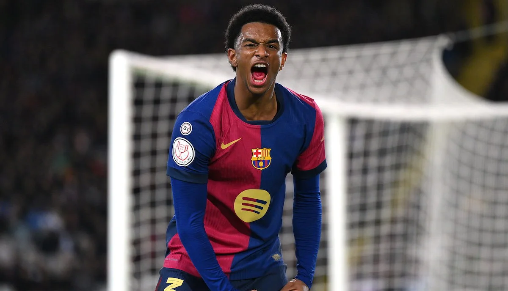

Bek, kanat çizgisinin hem savunmacısı hem hücumcusudur. Bindirmeler, ortalar, ikili mücadeleler ve geri koşular. Dünyanın en iyi beklerinden öğren, kanat oyununu geliştir.

Dünyanın en iyi beklerinin bindirmelerini, ortalarını ve ikili mücadelelerini incele. Kanat oyununu videolarla geliştir.
Sağ ayak, PSG, dünyanın en hücumcu beklerinden biri.
Sağ ayak, Chelsea, mükemmel orta ve duran top ustası.
Sağ ayak, Barcelona, denge ve pozisyon bilgisi.
Sağ ayak, Inter, fiziksel güç ve hücum bindirmeleri.
Sağ ayak, süratli ve çift yönlü koşu gücü.
Sol ayak, Man City, ofansif sol bek ve bitiricilik.
Sol ayak, Bayer Leverkusen, orta ve oyun kurma uzmanı.
Sol ayak, PSG, sürat ve 1v1 savunma.
Sol ayak, Barcelona, patlayıcı sürat ve çizgi bindirmesi.
Sol ayak, Arsenal, top çıkarma ve öne çıkma cesareti.
Sağ ayak — PSG, hücumcu bebek.
Sağ ayak — Chelsea, orta ustası.
Sağ ayak — Barcelona, pozisyon bilgisi.
Sağ ayak — Inter, fiziksel bindirme.
Sağ ayak — süratli çift yönlü bek.
Sol ayak — Man City, ofansif sol bek.
Sol ayak — Leverkusen, orta uzmanı.
Sol ayak — PSG, sürat ve 1v1.
Sol ayak — Barcelona, patlayıcı sürat.
Sol ayak — Arsenal, top çıkarma.
Sana özel program oluşturmak için 5 kısa soru cevapla. AI asistanın kanat oyununu analiz etsin, haftalık bek programını hazırlasın.
Cevapların değerlendiriliyor
Analiz sonuçlarına göre haftalık planın hazır.